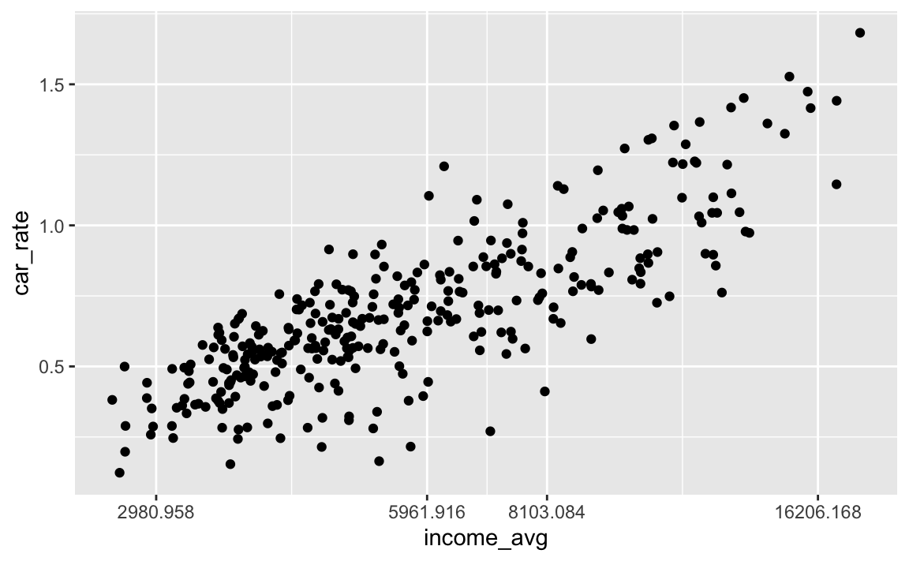
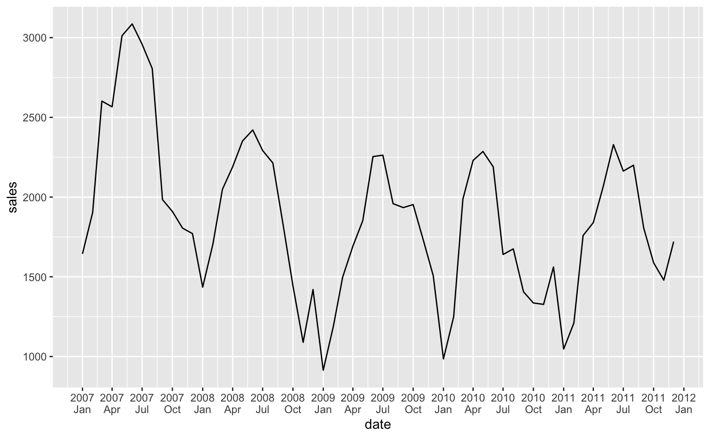
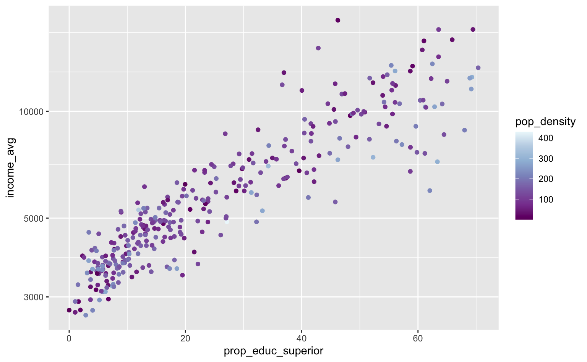
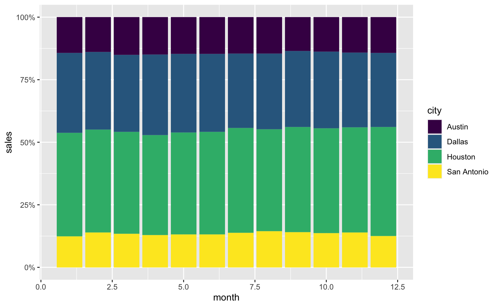
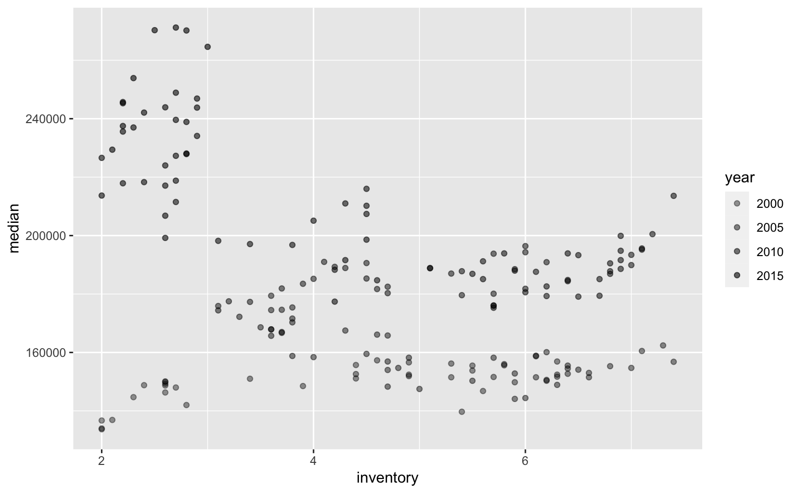

library(ggplot2)
library(scales)
library(dplyr)
library(forcats)
library(stringr)
pod <- readr::read_csv(
here::here("posts/ggplot2-tutorial/table_pod.csv"),
show_col_types = FALSE
)
pod <- filter(pod, code_muni == 36, pop > 0)Legendas, escalas e temas
Este post é o primeiro da série de tutoriais que não vai tratar de um tipo de gráfico ou, mais especificamente, de um tipo de geom. Escalas, no contexto do ggplot2 são tanto os eixos do gráfico como as suas cores, quando usa-se a função aes para mapear alguma variável em cores. As funções scale_* controlam todos os aspectos das escalas, incluindo boa parte da legenda de cores.
Alguns aspectos mais detalhados das escalas, como a fonte do texto, o tamanho, etc. são controlados por uma função mais específica theme. Em alguns exemplos deste post eu apresento como utilizar esta função, mas uma apresentação mais formal fica postergada para outro momento. A função theme é talvez a mais burocrática e complexa do pacote ggplot2.
O código abaixo lista os pacotes necessários para acompanhar este post.
#> Os pacotes necessários para acompanhar este post
library(ggplot2)
library(scales)
library(dplyr)
library(forcats)
library(stringr)
library(readr)
#> Importa os dados limpos da Zona OD.
pod <- read_csv("...")
#> Seleciona apenas zonas de São Paulo com população acima de zero
pod <- filter(pod, code_muni == 36, pop > 0)Para este post, além das bases de dados que já acompanham o pacote ggplot2 também uso a base da Pesquisa Origem e Destino (POD) de São Paulo, de 2018. A POD é uma pesquisa feita pela companhia Metrô de São Paulo que compila informações sobre os deslocamentos diários da população da Região Metropolitana de São Paulo. Além de dados sobre mobilidade, a POD também reúne uma série de informações socioeconômicas. Os dados são agregados a nível de Zona Origem e Destino ou Zona OD; as zonas OD são subconjuntos de distritos de São Paulo e das demais cidades da Região Metropolitana e, na prática, são como bairros de cada cidade1.
Neste post vou explorar apenas as zonas OD da cidade de São Paulo, exlcuindo as zonas “não-residenciais”, como a Cidade Universitária (campus da USP). A base acima foi organizada por mim e mais detalhes do código utilizado podem ser encontrados neste repositório.
Escalas
Escalas, no contexto do ggplot, significam tanto a manipulação dos eixos do gráfico como das cores dos elementos. Há uma infinidade de funções scale_* e não vale a pena entrar nos detalhes de cada uma delas. Neste post vou discutir a lógica geral destas funções e apresentar aquelas que acredito que possam ser as mais úteis.
O uso de escalas de cores e legendas está intimamente ligado ao tipo de variável que se está visualizando. Para entender melhor o funcionamento das escalas é preciso compreender o tipo de variável que se vai plotar e como o R interpreta esta variável. A próxima seção vai revisar a distinção entre variáveis contínuas e variáveis discretas e como estes dados são processados e armazenados no R.
Tipos de variáveis
O ggplot, grosso modo, divide as variáveis em contínuas e discretas. As variáveis contínuas, em geral, são numéricas e podem assumir qualquer valor; já as variáveis discretas costumam ser “categóricas” e são “contáveis”. O preço de um imóvel, por exemplo, é uma variável contínua. Já uma variável que categoriza um imóvel entre “casa” e “apartamento” é uma variável discreta.
Esta lógica é aplicada nas funções que controlam os eixos x e y de um gráfico.
scale_y_continuous()scale_y_discrete()scale_x_continuous()scale_x_discrete()
Uma lógica muito similar se aplicas às principais funções que controlam as cores e a legenda de cores de um gráfico:
scale_color_continuous()scale_color_discrete()scale_fill_continuous()scale_fill_discrete()
Mesmo quando modificamos outros aspectos estéticos do gráfico como size e alpha temos:
scale_alpha_continuous()scale_alpha_discrete()scale_size_continuous()scale_size_discrete()
Variáveis contínuas
Uma variável contínua costuma representar algum número. No R há várias formas de armazenar números, mas isto não costuma ser muito relevante para a tarefa de visualização dos dados. Na maior parte dos casos, basta garantir que a coluna numérica em questão seja um número usando is.numeric() ou as.numeric().
Variáveis discretas
Uma variável discreta costuma representar uma categoria. No R existe uma classe especial de variável para armazenar este tipo de dado chamada factor. Um factor é um vetor de texto ou de números que segue uma ordem. Além de ter uma ordem, cada elemento pode ter um label.
factor(x = c(...), levels = c(...), labels = c(...))Para se definir um factor basta usar a função homônima. Note que na ausência de uma ordem explicitamente definida, o R organiza o vetor em ordem alfabética. Se, ao invés de um vetor de texto tivéssemos usado um vetor de números, eles teriam sido ordenados no sentido ascedente (do menor para o maior).
Para acessar a ordem do factor pode-se usar a função order() ou, mais especificamente, a função levels().
#> Criando um factor
medalhas <- factor(c("ouro", "prata", "bronze"))
#> [1] ouro prata bronze
#> Levels: bronze ouro prata
#> Conferindo a ordem dos elementos
order(medalhas)
#> [1] 3 1 2
levels(medalhas)
#> [1] "bronze" "ouro" "prata" O código abaixo recria o factor, deixando mais explícito a estrutura deste tipo de objeto. Note que o argumento levels e labels não precisam ser repetidos.
#> Criando um factor
medalhas <- factor(
c("ouro", "prata", "bronze", "bronze", "ouro", "bronze"),
levels = c("bronze", "prata", "ouro"),
labels = c("Bronze", "Prata", "Ouro")
)
medalhas
#> [1] Ouro Prata Bronze Bronze Ouro Bronze
#> Levels: Bronze Prata OuroTrabalhar com factors pode ser uma tarefa bastante frustrante. Neste sentido, recomendo muito o uso do pacote forcats, que provê uma série de funções fct_* que facilitam muito a manipulação deste tipo de objeto. Os exemplos abaixo mostram algumas das funções mais úteis deste pacote.
df <- data.frame(
x = c(5, 2, 3),
y = factor(c("bronze", "prata", "ouro"))
)
#> Troca a ordem do factor segundo algum outro vetor
fct_reorder(df$y, df$x)
#> [1] bronze prata ouro
#> Levels: prata ouro bronze
#> Troca os labels do factor usando uma função
fct_relabel(df$y, toupper)
#> [1] BRONZE PRATA OURO
#> Levels: BRONZE OURO PRATA
#> Troca os labels do factor manualmente
fct_recode(df$y, "Bronze" = "bronze")
#> [1] Bronze prata ouro
#> Levels: Bronze ouro prata
#> Conta a ocorrência de cada factor
fct_count(df$y)
#> A tibble: 3 × 2
#> f n
#> <fct> <int>
#> 1 bronze 1
#> 2 ouro 1
#> 3 prata 1Por fim, vale comentar brevemente sobre uma particularidade de um factor criado a partir de uma variável numérica. Para converter um factor de texto em character basta usar as.character(x). Para converter de volta um factor de números é preciso usar as.numeric(as.character(x)).
x <- c(1, 10, 2, 5, 1)
y <- as.factor(x)
#> Por padrão, as.numeric retorna a ordem do factor. Equivalente a order()
as.numeric(y)
#> [1] 1 4 2 3 1
#> Para converter de volta no número original
as.numeric(as.character(y))
#> [1] 1 10 2 5 1Escalas: o básico
Vamos começar com um gráfico simples que mostra a renda domiciliar média da Zona OD no eixo-x e o número médio de carros por domicílio no eixo-y.
ggplot(pod, aes(x = income_avg, y = car_rate)) +
geom_point()
No caso do gráfico acima, ambas as variáveis são contínuas, portanto, para alterar algum dos eixos usa-se as funções scale_x_continuous() e scale_y_continuous(). Estas funções tem 4 argumentos principais: breaks, labels, limits e expand.
Para controlar as ‘quebras’ do eixo-x (os pontos onde aparece cada número) usa-se o argumento breaks.
ggplot(pod, aes(x = income_avg, y = car_rate)) +
geom_point() +
scale_x_continuous(breaks = seq(0, 20000, 2500))
Por padrão, o número exibido no gráfico é igual ao argumento fornecido em breaks, mas pode-se alterar isto usando labels. Para ser mais preciso: breaks define a posição onde o labels vai ser exibido.
No exemplo abaixo uso o fato do salário mínimo, à época da pesquisa, ser de R$954.
ggplot(pod, aes(x = income_avg, y = car_rate)) +
geom_point() +
scale_x_continuous(
breaks = 954 * c(2, 4, 6, 10, 15),
labels = stringr::str_glue("{c(2, 4, 6, 10, 15)} S.M.")
)
O argumento labels pode ser qualquer texto, desde que ele tenha o mesmo número de elementos que o argumento breaks. O pacote scales oferece algumas funções label_* pré-definidas que auxiliam a formatar as escalas. O exemplo abaixo mostra como usar a função label_dollar para formatar o eixo-x.
ggplot(pod, aes(x = income_avg, y = car_rate)) +
geom_point() +
scale_x_continuous(
breaks = seq(0, 20000, 2500),
labels = label_dollar(big.mark = ".")
)
Na minha experiência, as funções mais úteis do pacote são:
label_number(): usado para formar números de maneira gerallabel_percent(): usado para formatar números expressados percentualmentelabel_dollar(): usado para formatar números que representam dinheiro
Para seguir o padrão brasileiro, utiliza-se big.mark = "." e decimal.mark = ",".
Para dar um “zoom-in” no gráfico pode-se alterar o argumento limits. Este argumento recebe um par de números para definir o número máximo e mínimo que deve ser plotado. Para deixar o eixo “livre” basta definir o valor como NA.
ggplot(pod, aes(x = income_avg, y = car_rate)) +
geom_point() +
scale_x_continuous(limits = c(3000, 5000)) +
scale_y_continuous(limits = c(NA, 1))
Por fim, o argumento expand diminui ou aumenta a distância entre o gráfico e o limite dos eixos. A aplicação mais comum disso é para reduzir o espaço em branco que “sobra” em alguns gráficos.
O par de histogramas abaixo mostra a distribuição da renda domiciliar média entre as zonas OD.
ggplot(pod, aes(x = car_rate)) +
geom_histogram(bins = 12, color = "white")
ggplot(pod, aes(x = car_rate)) +
geom_histogram(bins = 12, color = "white") +
scale_x_continuous(expand = c(0, 0))

Escalas discretas funcionam praticamente da mesma forma. Uma distinção importante é que, no caso de uma variável discreta ou categórica, o eixo - por padrão - vai plotar o label da variável.
O código abaixo encontra os 5 distritos mais populosos de São Paulo.
#> Seleciona os cinco distritos mais populosos
dstr_pop <- pod |>
#> Soma a variável pop em cada distrito
summarise(total_pop = sum(pop), .by = "name_district") |>
#> Encontra os cinco valores mais elevados
slice_max(total_pop, n = 5) |>
#> Converte a variável `name_district` para factor
mutate(name_district = factor(name_district))
ggplot(dstr_pop, aes(x = name_district, y = total_pop)) +
geom_col()
Caso não se queira alterar o tipo da variável é possível definir os labels diretamente na função scale_x_discrete().
ggplot(dstr_pop, aes(x = name_district, y = total_pop)) +
geom_col() +
scale_x_discrete(
labels = c("Capão Redondo", "Grajaú", "Jd. Ângela", "Jd. São Luis",
"Sapopemba")
)
Por fim, vale notar que o argumento labels aceita uma função. Neste caso, fornece-se apenas o nome da função, sem argumentos explícitos. No exemplo abaixo, utilizado a função stringr::str_to_upper para converter o texto do eixo x para maiúsculo. No caso de uma função que precisa de um argumento adicional, como é o caso da função stringr::str_wrap é preciso criar uma ‘função anônima’. Uma função anônima funciona exatamente como uma função convencional e permite que um argumento adicional seja inserido.
base_plot <- ggplot(dstr_pop, aes(x = name_district, y = total_pop)) +
geom_col() +
coord_flip() +
labs(x = NULL, y = NULL)
#> Texto maísculo
base_plot + scale_x_discrete(labels = stringr::str_to_upper)
#> Texto minúsculo
base_plot + scale_x_discrete(labels = stringr::str_to_lower)
#> Texto em formato de 'título'
base_plot + scale_x_discrete(labels = stringr::str_to_title)
#> Quebras de linha automáticas no texto
base_plot + scale_x_discrete(labels = \(x) stringr::str_wrap(x, width = 8))
Um pouco mais de escalas
Além das funções scale_* mais básicas há algumas mais específicas que pode ser úteis em alguns casos. O código abaixo mostra a função scale_x_log10() que, como o nome sugere, aplica uma transformação log nos dados. Uma das vantagens de usar esta função, ao invés de transformar os dados usando a função log(), ou mesmo de usar trans = 'log' dentro de scale_x_continuous(), é que as quebras do eixo-x fiquem num formato num formato mais bonito.
De maneira geral, a função scale_x_log10() é útil quando há muita variância crescente nos dados ou alguma das variáveis segue algum tipo de crescimento exponencial.
ggplot(pod, aes(x = income_avg, y = car_rate)) +
geom_point() +
scale_x_log10()
ggplot(pod, aes(x = income_avg, y = car_rate)) +
geom_point() +
scale_x_continuous(trans = "log")

Outra função interessante que eventualmente pode ser útil é a scale_*_reverse() que inverte a direção dos dados. Esta função é muito mais prática do que, por exemplo, trocar o sinal do dado original e aí utilizar o argumento labels para ajustar os números.
ggplot(pod, aes(x = income_avg, y = car_rate)) +
geom_count() +
scale_y_reverse()
Por fim, outra função interessante é a scale_*_binned(), que ajuda a discretizar uma varíalvel contínua. Ela funciona de maneira similar a um historgrama, argupando uma variável contínua em grupos: isto facilita a observação de padrões nos dados.
ggplot(pod, aes(x = income_avg, y = car_rate)) +
geom_count() +
scale_x_binned() +
scale_y_binned()
O exemplo abaixo é um pouco mais sofisticado
top_car <- pod %>%
slice_max(car_rate, n = 10) |>
mutate(
name_zone = factor(name_zone),
name_zone = forcats::fct_reorder(name_zone, car_rate)
)
ggplot(top_car, aes(x = name_zone, y = car_rate)) +
geom_col() +
coord_flip() +
scale_x_discrete(labels = \(x) stringr::str_wrap(x, width = 12)) +
theme(axis.text.y = element_text(hjust = 0.5))
Datas
Datas têm uma classe especial e, por conseguinte, tem também algumas funções dedicadas. A função scale_x_date tem dois argumentos principais:
date_breaks: que aceita valores como “1 year”, “3 months”, etc.date_labels: que aceita valores como “%Y%m%d”, “%Y%b”, etc.
Vou apresentar esta função de maneira breve, diretamente atráveis de exemplos. O exemplo abaixo mostra o funcionamento geral desta função.
ggplot(economics, aes(x = date, y = psavert)) +
geom_line() +
scale_x_date(date_breaks = "5 year", date_labels = "%Y")
O exemplo abaixo mostra como exibir o número do ano junto com a nome abreviado do mês. Note como o uso de \n quebra a linha no eixo-x.
prices_austin <- txhousing %>%
filter(city == "Austin", year %in% 2007:2011) %>%
mutate(date = lubridate::make_date(year, month))
ggplot(prices_austin, aes(x = date, y = sales)) +
geom_line() +
scale_x_date(date_breaks = "3 month", date_labels = "%Y\n%b")
Para escolher datas específicas, usa-se o argumento convencional breaks.
datas <- c(as.Date("2007-01-01"), as.Date("2008-07-30"), as.Date("2010-03-01"))
ggplot(prices_austin, aes(x = date, y = sales)) +
geom_line() +
scale_x_date(breaks = datas, date_labels = "%Y\n%b")
O exemplo abaixo pula alguns passos, já que ainda não se apresentou formalmente a função theme.
prices_austin10 <- txhousing %>%
filter(city == "Austin", year %in% 2010:2011) %>%
mutate(date = lubridate::make_date(year, month))
ggplot(prices_austin10, aes(x = date, y = sales)) +
geom_line() +
scale_x_date(
breaks = seq(as.Date("2010-01-01"), as.Date("2011-12-01"), by = "month"),
date_labels = "%Y-%m"
) +
theme(
panel.grid.minor = element_blank(),
axis.text.x = element_text(angle = 90)
)
Por fim, a tabela abaixo resume como funciona a codificação dos padrões de datas. Vale notar que os inputs %b e %B usam o nome dos meses definidos ou pelo sistema operacional ou pelo padrão de locale do R. O mesmo vale para %A e outras que imprimem algum texto. Para consultar veja Sys.getlocale(). Vale notar que não basta somente definir um date_labels apropriado, é preciso também que o dado esteja no formato correto.
| Input | Label |
|---|---|
| %Y | Ano completo (e.g. 2010) (0000-9999) |
| %y | Ano abreviação (e.g. 10) (00-99) |
| %m | Mês em número (e.g. 11) (01-12) |
| %b | Mês abreviação (e.g. Jan) (Jan-Dec) |
| %B | Mês completo (e.g. January) (January-December) |
| %d | Dia do mês (e.g. 02) (01-31) |
| %a | Dia da semana, abreviação (Mon-Sun) |
| %A | Dia da semana, completo (Monday-Sunday) |
| %I | Hora, no padrão 12 horas (01-12) |
| %H | Hora, no padrão 24 horas (00-23) |
Cores
Em posts anteriores, vimos que o ggplot mapeia elementos estéticos em elementos visuais no gráfico. Neste sentido, podemos fazer com que as cores do gráfico representem alguma variável dos nossos dados. Há dois tipos de “cores”: color e fill. Grosso modo, color é utilizado para desenhar o contorno de objetos ou alguns objetos pequenos, enquanto fill é utilizado para preencher objetos. No caso do histograma abaixo isto fica evidente: a cor fornecida para o argumento color é mapeada no contorno da barra, enquanto a cor fornecida para fill preenche a barra.
ggplot(pod, aes(x = car_rate)) +
geom_histogram(bins = 12, color = "white", fill = "dodgerblue4")
Há dois casos gerais para se pensar o uso de cores no ggplot. Caso você já tenha uma pré-seleção de cores, basta usar scale_color_manual() ou scale_fill_manual(). Caso você não tenha uma paleta de cores pré-definida será necessário depender de alguma das várias funções do ggplot como
scale_color_brewer()scale_color_distiller()scale_color_gradient()
Além das funções do pacote ggplot2 há diversos pacotes
RColorBrewer::display.brewer.all()
ggplot(pod, aes(x = prop_educ_superior, y = income_avg)) +
geom_point(aes(color = name_region)) +
scale_y_log10() +
scale_color_brewer(type = "qual", palette = 4)
ggplot(pod, aes(x = prop_educ_superior, y = income_avg)) +
geom_point(aes(color = pop_density)) +
scale_y_log10() +
scale_color_distiller(palette = 3)
ggplot(pod, aes(x = prop_educ_superior, y = income_avg)) +
geom_point(aes(color = pop_density)) +
scale_y_log10() +
scale_color_binned(type = "viridis")
#
# top_car <- head(top_car, 3)
#
# base_plot <- ggplot(aluguel, aes(x = room, y = rent, fill = room)) +
# geom_bar(stat = "summary_bin", fun = mean) +
# theme(legend.position = "none")
#
# base_plot + scale_fill_brewer(type = "qual", palette = 2)
# base_plot + scale_fill_brewer(type = "qual", palette = 6)
# base_plot + scale_fill_brewer(type = "qual", palette = 7)sub <- txhousing %>%
filter(
city %in% c("Austin", "Dallas", "Houston", "San Antonio"),
year == 2010
)
ggplot(sub, aes(x = month, y = sales)) +
geom_col(aes(fill = city), position = position_fill()) +
scale_y_continuous(labels = label_percent()) +
scale_fill_viridis_d()
Outros elementos estéticos
base_plot <- ggplot(pod, aes(x = income_avg, y = car_rate)) +
geom_point(aes(size = pop), alpha = 0.5) +
guides(size = "none")
p1 <- base_plot + scale_size_continuous(range = c(0, 5))
p2 <- base_plot + scale_size_continuous(range = c(0, 8))
p3 <- base_plot + scale_size_continuous(range = c(0, 10))
p4 <- base_plot + scale_size_continuous(range = c(0, 20))
Outro elemento estético comumente utilizado é alpha, que controla a transparência da visualização. Honestamente, apesar dele ser muito útil para evitar a sobreposição de elementos no gráfico, é difícil imaginar algum uso prático de scale_alpha. O gráfico abaixo mostra o estoque de imóveis e o preço mediano de venda por mês.
txhousing |>
filter(city == "Austin") |>
ggplot(aes(x = inventory, y = median)) +
geom_point(aes(alpha = year)) +
scale_alpha(range = c(0.4, 0.6))
Footnotes
Vale lembrar, que a cidade de São Paulo não possui uma divisão oficial de bairros, apenas de distritos e subprefeituras.↩︎